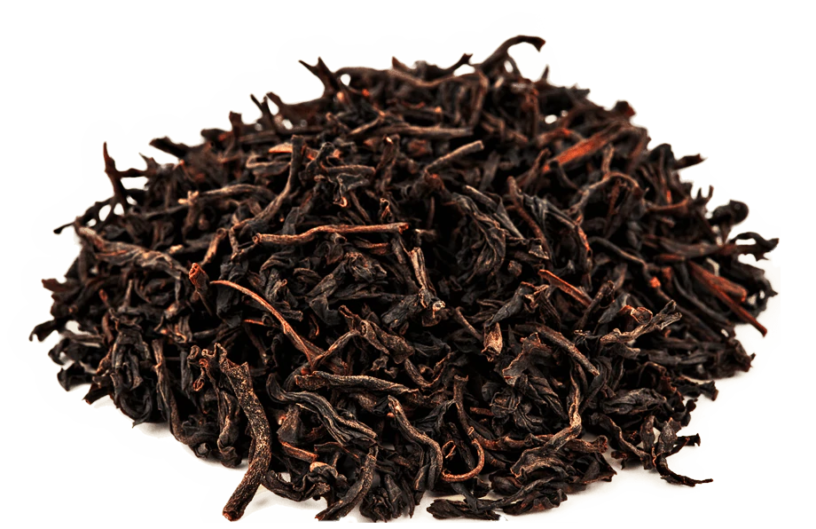
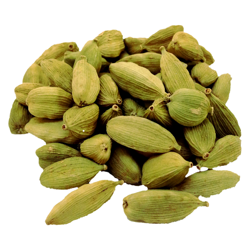
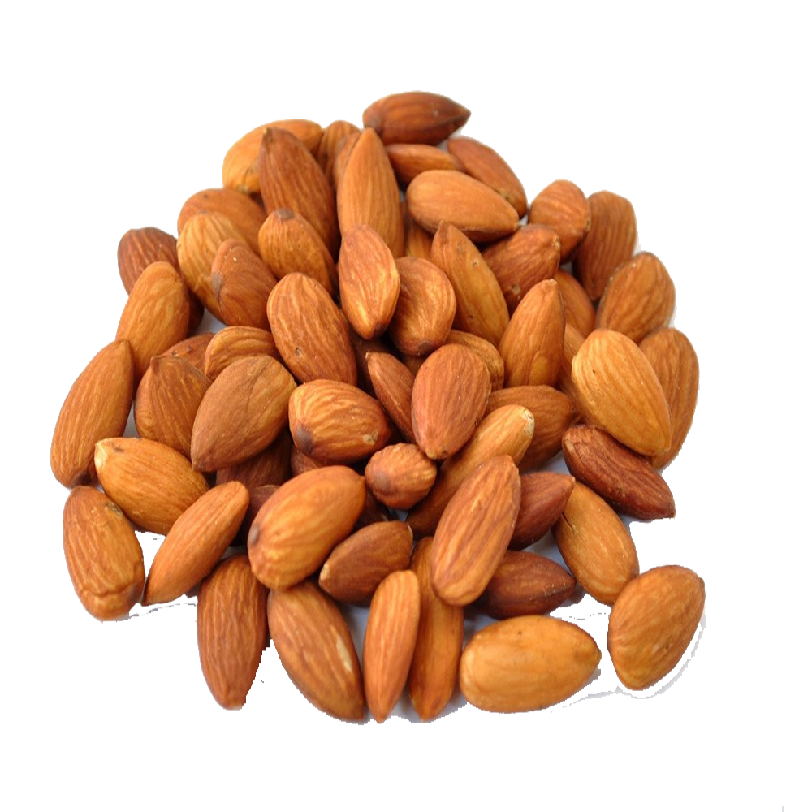
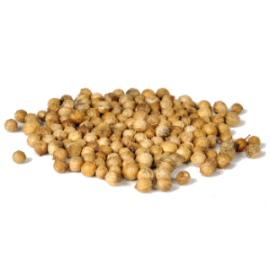

our ingredients
ceylon black tea
commonly referred to as the cleanest tea in the world, we source our Ceylon tea directly from Sri Lankan estates. Full of antioxidants for health and a kick of caffeine for focus
cinnamon

cinnamon offers slight heat and aids digestion. most cinnamon sold today is cinnamomum cassia. we only source the superior quality cinnamomum verum, or "true cinnamon" from its native Sri Lanka.
ginger
commonly referred to as the cleanest tea in the world, we source our Ceylon tea directly from Sri Lankan estates. Full of antioxidants for health and a kick of caffeine for focus
cardamom
cinnamon offers slight heat and aids digestion. most cinnamon sold today is cinnamomum cassia. we only source the superior quality cinnamomum verum, or "true cinnamon" from its native Sri Lanka.
almond milk
commonly referred to as the cleanest tea in the world, we source our Ceylon tea directly from Sri Lankan estates. Full of antioxidants for health and a kick of caffeine for focus
coriander
cinnamon offers slight heat and aids digestion. most cinnamon sold today is cinnamomum cassia. we only source the superior quality cinnamomum verum, or "true cinnamon" from its native Sri Lanka.